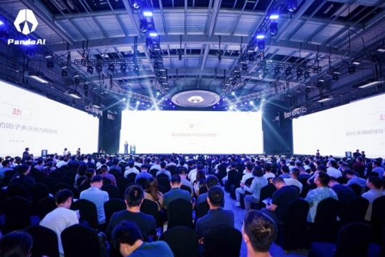

量化交易入门指南
从零理解什么是量化交易、策略逻辑与回测原理。适合完全没有编程基础的新手，用图文 + 案例带你建立系统思维。
入门级
策略逻辑
回测原理
了解详情 →
量化策略
从策略假设、系统化执行到回测复盘，建立一套可解释、可验证、可持续训练的量化学习路径。
推荐方案
按照学习基础分层：先建立量化思维，再进入策略自动化训练，最后用数据分析和 AI 工具扩展研究能力。
从零理解什么是量化交易、策略逻辑与回测原理。适合完全没有编程基础的新手，用图文 + 案例带你建立系统思维。
系统学习如何把交易规则整理成可执行流程，从策略条件、执行逻辑到回测复盘，完成一个完整的自动化策略案例。
围绕市场数据、指标计算、回测框架与研究信号记录展开训练。结合历史与示例数据，从策略思路到研究流程全覆盖。
入门课程
零基础也能看懂的量化交易系统入门，建立策略思维框架。
理解量化交易的基本概念、策略类型与适用场景。
模块二学习如何用历史数据验证规则逻辑与基础风险表现。
模块三建立风险边界、回撤、资金分配与暂停机制的基础认知。
模块四了解策略从想法、验证到测试环境观察和复盘迭代的完整路径。
免费内容 · 无需付费
进阶课程
从环境搭建、规则编写到回测验证和运行管理，建立可检查、可复盘的策略研究流程。
完成工具配置、环境测试和第一个策略程序运行。
模块二把策略想法拆解成数据、条件、信号和风险规则。
模块三用历史数据检验策略规则，理解指标、参数和过拟合风险。
模块四学习运行前检查、监控设置、异常处理和风险边界。
小班制 · 限额招募
进阶课程
围绕市场数据完成数据整理、研究信号记录、回测框架搭建与 AI 辅助研究。
掌握数据读取、清洗、指标计算、研究提示记录与文件输出。
模块二围绕价格、成交量与因子数据构建可测试的研究信号。
模块三搭建从数据读取、信号生成到结果指标评估的回测流程。
模块四结合 AI 工具与教育场景，理解 AI 辅助量化研究流程。
结合 PandaAI 战略合作
项目训练
把策略想法整理成明确的观察条件、退出条件、参与比例与失效条件，避免只凭主观判断做决策。
学习把策略规则整理成可复用的执行模块，理解参数、数据与执行环境之间的关系。
用历史数据验证策略假设，关注回撤、胜率、盈亏比、交易频率与样本偏差。
围绕滑点、延迟、风险暴露与系统异常建立检查清单，保持教育用途和风险意识。
AI 量化合作
这里建议作为量化策略页的重点背书模块，用于展示 GM 在 AI 量化创新、量化因子研究和行业生态协同方面的布局。
与 PandaAI 达成战略合作，并协同 20 余家中国头部基金、券商举办量化因子大赛，参与者达数万人。

训练营
4 周集训，从策略逻辑到代码项目，由 GMA 资深讲师全程带队。
本期训练营涵盖量化交易入门、策略自动化训练与数据量化研究三大模块，采用小班制教学与阶段式项目辅导，限额招募，确保每位学员都能获得充分反馈。
立即报名报名后将有 GMA 导师与您确认课程细节，名额有限，先到先得。